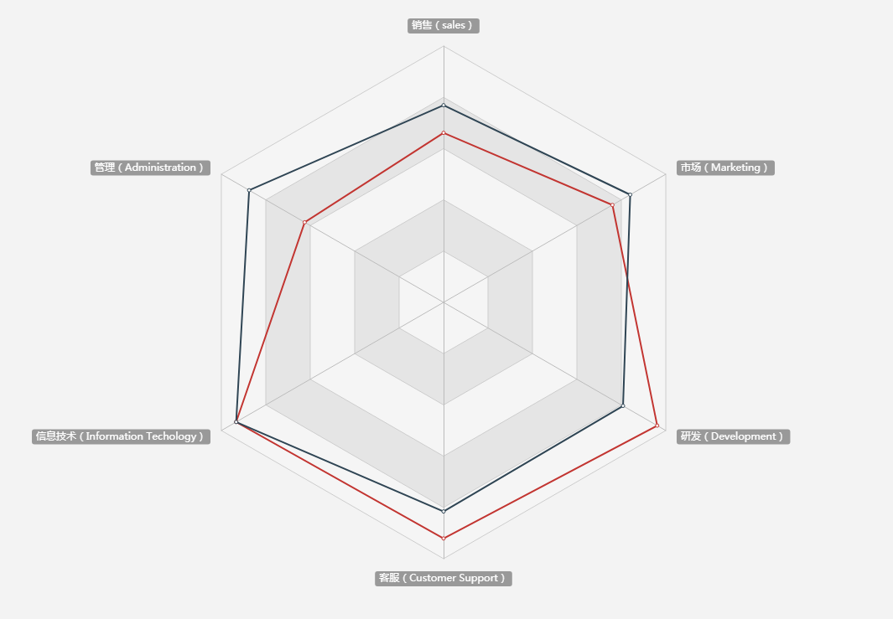
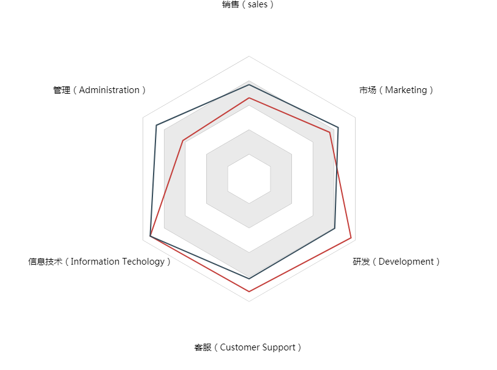
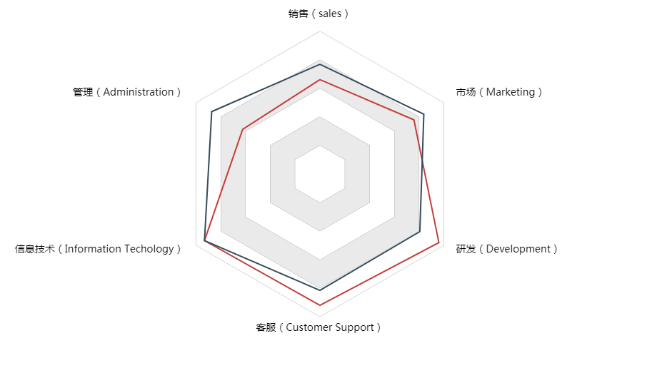

原文出处:本文由博客园博主大史不说话提供。
原文连接:https://www.cnblogs.com/dashnowords/p/10656750.html
原文连接:https://www.cnblogs.com/dashnowords/p/10656750.html

示例代码托管在：http://www.github.com/dashnowords/blogs
博客园地址：《大史住在大前端》原创博文目录
华为云社区地址：【你要的前端打怪升级指南】
一. 任务说明
使用原生canvasAPI绘制雷达图。（截图以及数据来自于百度Echarts官方示例库【查看示例链接】)。

二. 重点提示
雷达图绘制的看起来并不复杂，无非就是一些路径点的连线，其中的难点都在于一些细节。
坐标转换
为了避免在绘制过程中不断根据夹角来计算某个数据点的坐标，我们可以让坐标系先移动到绘图中心，然后在绘制过程中逐步旋转并使用
context.lineTo(x,y)来连线即可，这样做的好处是很明显的。比如在绘制背景六边形的时候，每次旋转后，路径点压根就不需要移动，直接在循环中每次都调用context.lineTo( )方法连线至同一个数据点即可，看起来位移没有变，实际上随着坐标系的旋转，连线绕过的是多边形的轨迹。文字的对齐
为了让文字保持正常的方向，我们需要将坐标系的旋转恢复到初始状态再进行绘制。绘制的过程中可以根据绘制点和中心连线相对于x轴的角度来动态修改其绘制时的相对点（
left,right,center），否则就会出现下图的结果，也就是文字区域的中心到图形中心的距离的确是一致的，但这并不是我们想要的效果。

canvas坐标系
请时刻记得canvas坐标系的初始方向是x轴向右，y轴向下，和普通笛卡尔坐标系是不一样的，尤其是在旋转角度和坐标计算的时候，很容易出现和预期角度不相符的结果。
三. 示例代码
//options数据来自于百度Echarts官方示例库
start(options);
/**
* 绘制图表
*/
function start(options) {
drawBg(options);
drawData(options);//绘制雷达图
drawText(options);//绘制文字
}
function drawBg(options) {
let length = options.radar.indicator.length;
let angleStep = -2 * Math.PI / length;
context.strokeStyle="#b2b2b2";
context.lineWidth = 1;
//调整坐标系
//移动中心点
context.translate(500,300);
//将x轴旋转至竖直向上
context.rotate(-90 * 2 * Math.PI / 360);
//每次以不同旋转半径绘制多个由大到小的图形
for(let r = 200; r > 0 ; r -=40){
//移动至第一个绘图点
context.save();
context.beginPath();
context.moveTo(r,0);
//转动坐标系绘制所有点
for(let i = 0; i < length; i++){
context.rotate(angleStep);
context.lineTo(r,0);
}
context.closePath();
context.stroke();
//明暗色替换填充，此处从大到小切换颜色覆盖式绘制即可
context.fillStyle = Math.round(r / 40) % 2 ? 'white':'#eaeaea';
context.fill();
context.restore();
}
}
/**
* 绘制数据
*/
function drawData(options) {
//解构赋值拿到数据关键点
let {radar:{indicator:indicators},series:[{data:data}]} = options;
let colors = ['#c43e3a','#364c5a'];
let length = indicators.length;
let angleStep = -2 * Math.PI / length;
for(let i = 0; i < data.length; i++){
context.save();
context.beginPath();
context.moveTo(200 * data[i].value[0] / indicators[0].max,0);
//遍历每组数据
for(let j = 1; j < data[i].value.length; j++){
context.rotate(angleStep);
context.lineTo(200 * data[i].value[j] / indicators[j].max,0);
}
context.restore();
context.lineTo(200 * data[i].value[0] / indicators[0].max,0);
context.strokeStyle = colors[i];
context.lineWidth = 2;
context.stroke();
}
context.restore();
}
//绘制文字
function drawText(options) {
let {radar:{indicator:indicators}} = options;
let length = indicators.length;
let angleStep = 2 * Math.PI / length;
let r = 220;
context.fillStyle = 'black';
context.font = "14px bold 黑体";
context.textAlign = 'center';
context.rotate(90 * Math.PI * 2 / 360);
for(let i = 0; i < indicators.length; i++){
let curAngle = -90*2*Math.PI/360 - angleStep*i;
//根据方向调整文字的对齐点
let cos = Math.cos(curAngle);
if (Math.abs(cos) < 10e-4) {
context.textAlign = 'center';
}else if(cos > 0){
context.textAlign = 'left';
}else{
context.textAlign = 'right';
}
console.log(indicators[i].name, Math.cos(curAngle))
context.fillText(indicators[i].name, r * Math.cos(curAngle), r * Math.sin(curAngle));
}
}浏览器中可查看效果：

百度Echarts官方示例库中有这样一个雷达图的示例，展示了在雷达图上表现时间维度的示例，感兴趣的读者可以自行查看。